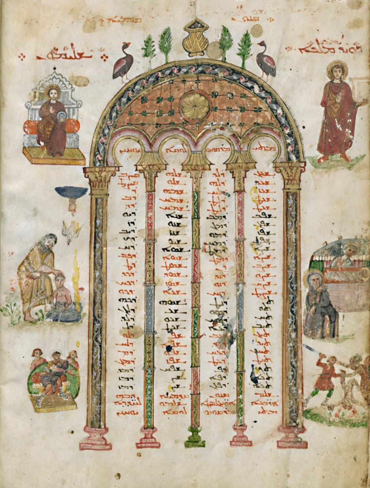
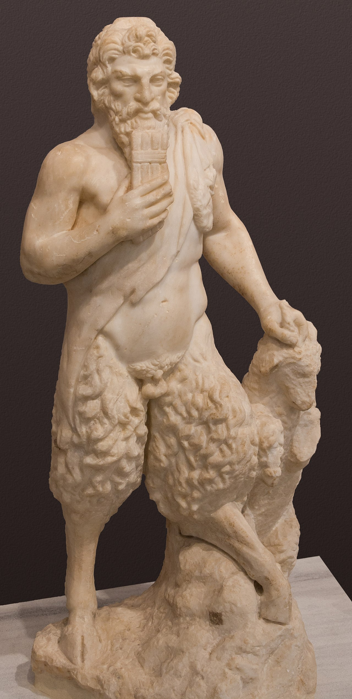
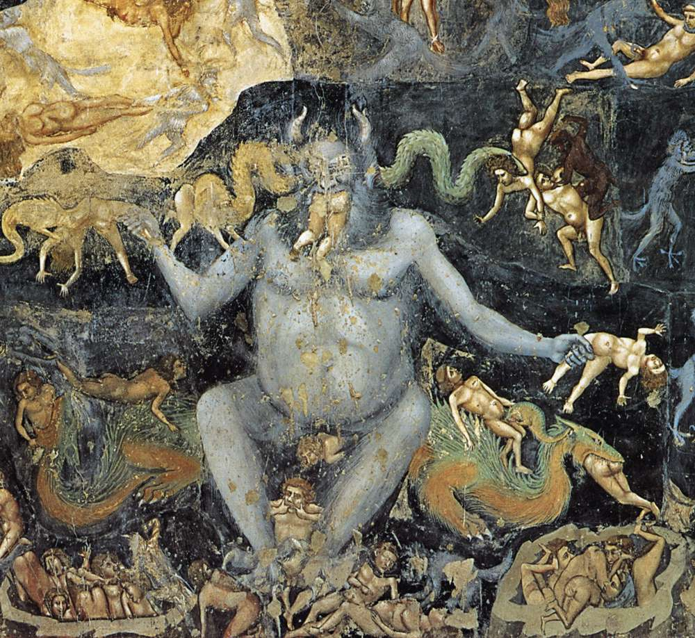
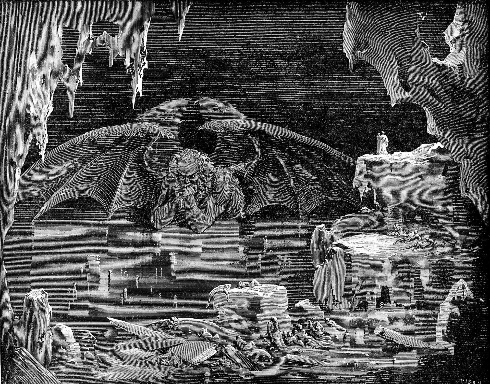

Pide a cualquiera que dibuje un diablo. Saldrán cuernos, una cola con punta de flecha, un tridente, piel roja y una barbita en punta. Es una de las imágenes más estables y más compartidas de la cultura occidental: la reconoce un niño de cinco años en cualquier país.
Y no hay ni un solo versículo, en toda la Biblia, que describa el aspecto físico del diablo. Ni uno. No es que la descripción sea escasa o ambigua: es que no existe. Cuernos, pezuñas, cola, tridente, piel roja y barba de chivo son todos extrabíblicos, sin excepción.
Así que hay una pregunta que responder, y es una buena pregunta de historia: si no venía de los textos, ¿de dónde salió cada pieza?
El color antiguo era el negro
Empecemos por lo que más sorprende. El color más antiguo y mejor documentado del demonio no es el rojo: es el negro.
Ya en los siglos IV y V, en la literatura monástica y hagiográfica, el demonio es negro. En la Vida de Antonio de Atanasio se aparece al santo como un muchacho negro; los dichos de los Padres del desierto y los escritos de Casiano van en la misma dirección. El negro codifica varias cosas a la vez: oscuridad cosmológica, humo y quemadura infernal, y —esto hay que decirlo, y la investigación crítica lo dice— prejuicio etnográfico de la época. La figura del demonio «etíope» de las tentaciones del desierto no es un detalle inocente, y estudiarla como lo que es forma parte de estudiar bien el asunto.
Por qué se empezó a dibujarlo
Hay una constatación que reorganiza todo este capítulo, y se la debemos a Sophie Lunn-Rockliffe: el Diablo estuvo notablemente ausente de la representación visual antropomorfa durante toda la Antigüedad tardía. No hay retratos suyos porque no se lo retrataba.
Su propuesta es invertir la pregunta. No se trata de averiguar por qué no lo pintaban, sino por qué empezaron a pintarlo hacia el siglo VI. Los cristianos tardoantiguos percibían la presencia demoníaca «por inferencia y por fe, más que por prueba visual»: el demonio se notaba en los efectos, no se veía en las paredes. Que en algún momento se decidiera darle cara es el acontecimiento que hay que explicar.
Y es rigurosa con sus propias fuentes, lo que conviene imitar. Cuando en el Philopseudes de Luciano, en el siglo II, aparece un demonio de tez oscura y humeante, Lunn-Rockliffe advierte que está inserto en un relato deliberadamente poco fiable, escrito precisamente para burlarse de los crédulos. No sirve como prueba de una iconografía establecida.

Rávena, y una advertencia
La imagen que se cita siempre como la primera es un mosaico de Sant'Apollinare Nuovo, en Rávena, de la primera mitad del siglo VI: la escena de la separación de las ovejas y los cabritos, tomada de Mateo 25, con un ángel azulado a la izquierda de Cristo, detrás de los cabritos.
Hay que presentarla por lo que es: la candidata más citada y también la más discutida. No hay inscripción que la identifique. No hay cuernos. No hay ningún rasgo diabólico. Es un ángel, y su color oscuro puede ser simplemente compositivo, en contraste con el ángel rojo que está al lado de las ovejas. Llamarla «la primera imagen del diablo» es adelantarse a lo que la imagen permite.
Los primeros demonios antropomorfos que la investigación reconoce sin discusión están en otro sitio y son bastante menos majestuosos: en los Evangelios de Rábula, hacia 586, son «pequeños e indistintos, rojos, semihumanos, semimonstruosos, con brazos como garras». Pequeños. Rojos ya en el siglo VI. Y en el díptico de Murano, de la misma época, un minúsculo torso de hombre saliendo de la cabeza de un poseso.

Cómo se le fue fabricando un cuerpo
Empieza en cero, en los textos, porque ahí no hay ninguna descripción. Mueve el deslizador y observa una cosa: ningún rasgo se apaga nunca. La imagen del diablo no evoluciona sustituyendo un rasgo por otro; se acumula sumando. Los rasgos con interrogación están atestiguados pero discutidos.
El asunto de Pan
La explicación más repetida para los cuernos es Pan. Y tiene una lógica real: Pan y los faunos se representaban como hombres con cuernos de cabra, patas peludas con pezuñas hendidas y barba, y los cristianos identificaban a los dioses paganos con demonios —la versión griega del salmo 96 los llama literalmente daimónia—, lo que facilitaba el trasvase de rasgos.
Pero conviene rebajarle el peso, por cuatro razones concretas.
Primera, la cronología no encaja. Entre la desaparición efectiva del culto a Pan y la aparición del diablo cornudo hay un hueco de varios siglos, demasiado grande para una transmisión directa.
Segunda, hay candidatos con mejor pedigrí textual. Los eríphia, los cabritos que Mateo 25 pone a la izquierda del juez, y el macho cabrío de Azazel de Levítico 16 — con el que empezó esta serie— son fuentes bíblicas y rituales de la caprinidad del diablo. No hace falta ir a Arcadia si el material está en casa.
Tercera, la hibridez animal era el idioma visual normal de lo monstruoso en el arte medieval: grifos, dragones, seres compuestos. El diablo pudo simplemente absorber una convención que ya existía para todo lo demás.
Y cuarta: las alas de murciélago y la cola no vienen de Pan. Vienen del dragón de Apocalipsis 12, que es un repertorio distinto.
La formulación defendible es ésta: Pan y los sátiros aportaron un vocabulario visual disponible que el arte cristiano medieval reutilizó, pero no son «el origen» del diablo cornudo. La derivación directa es una hipótesis popular con problemas de fecha, y compite con al menos tres explicaciones mejor ancladas.

Cuándo se fija la forma
No hay un momento de invención, y buscarlo es un error de planteamiento. Hay una estabilización: entre los siglos XI y XIII la figura cornuda, con pezuñas y cola, se convierte en la manera normal de dibujarlo, y en el gótico y en los Juicios Finales de los siglos XIII al XV la acumulación de rasgos monstruosos se dispara —lengua larga, colmillos, pelaje, alas de murciélago, coloración oscura, y bocas suplementarias en el vientre y en las nalgas para devorar condenados por varios sitios a la vez—.
El Codex Gigas, copiado hacia 1229, cae exactamente en esa ventana. Su retrato del diablo a página completa no es el comienzo de nada: es un ejemplar de una convención que en ese momento ya funciona.


Cuernos, pezuñas y barba existían como vocabulario visual, y los dioses paganos se identificaban con demonios. Pero hay siglos de hueco y la derivación directa no se sostiene.
Los eríphia, los cabritos puestos a la izquierda del juez, dan la caprinidad del diablo desde dentro del propio canon, y en un contexto de juicio.
El macho cabrío de Azazel, con el que empezó esta serie. La cabra ya estaba asociada ritualmente a la expulsión del mal.
Grifos, dragones, seres compuestos: mezclar animales era el idioma normal de lo monstruoso. El diablo pudo limitarse a absorberlo.
Las alas de murciélago y la cola vienen del repertorio del dragón, no de Pan. Es un préstamo distinto y con mejor rastro.
Los dos contraejemplos que lo demuestran
Y ahora la parte más elegante del asunto, que consiste en mirar a las dos grandes obras que todo el mundo cree responsables de la imagen del diablo, y comprobar que ninguna de las dos la contiene.
El Lucifer de Dante no tiene cuernos ni tridente. En el canto XXXIV del Infierno está hundido en el hielo hasta la mitad del pecho, tiene tres caras en una sola cabeza —bermeja, amarillenta y negra—, seis alas de murciélago cuyo batir genera el viento que congela el Cocito, llora con seis ojos y tritura en sus tres bocas a Judas, Bruto y Casio. Y sobre todo: no habla. No dice una palabra, no tienta a nadie, no gobierna nada. Sufre la misma pena que los demás condenados. Es un motor mecánico del frío.
Lo que Dante sí aporta es notable: las tres caras como inversión paródica de la Trinidad, el hielo en lugar del fuego en el centro del infierno —la traición como congelación absoluta del amor—, y una cosmología entera, porque la montaña del Purgatorio es el escombro que levantó su impacto al atravesar la tierra. Los diablos con arpones, esos que tanto se le atribuyen, son los Malebranche de los cantos XXI y XXII: demonios menores, no Lucifer.
El Satán de Milton no tiene cuernos, ni pezuñas, ni cola, ni piel roja. Es un arcángel de belleza arruinada, gigantesco y majestuoso. Lo que Milton le da es lo que ninguna imagen podía darle: voz. «Mejor reinar en el infierno que servir en el cielo.» «La mente es su propio lugar, y en sí misma puede hacer un cielo del infierno y un infierno del cielo.» De ahí sale el Satán romántico, y de ahí, por una línea que llega hasta hoy, el antihéroe moderno.
Y de ahí salen también cuatro cosas que la gente cree bíblicas y no lo son: la secuencia completa —rebelión por orgullo, guerra en el cielo, expulsión, venganza mediante la tentación—, que no está en ningún texto bíblico y es un montaje de Isaías 14, Ezequiel 28, Apocalipsis 12 y Lucas 10:18; la cronología, con la caída situada antes del Edén, cuando en Apocalipsis 12 el episodio está ligado al nacimiento del mesías; el infierno como reino organizado con parlamento y demonios con nombre propio —el Pandemonium, palabra que Milton acuñó—; y la identificación total de la serpiente con Satán, ejecutada narrativamente cuando Satán entra en el animal y termina metamorfoseado en él.


Y el rojo llegó al final
Queda la pieza más reciente, y es la que más desconcierta. El diablo rojo con barba de chivo, con capa y pluma en el sombrero, el de las viñetas y los disfraces, se estandariza como imagen popular en el siglo XIX: viene de las puestas en escena teatrales y operísticas del Fausto y de la figura de Mefistófeles.
En el arte medieval predominan el negro, el pardo, el verdoso y el azulado. El rojo existía desde Rábula, pero como uno más entre varios. Que se convirtiera en el color del diablo es un fenómeno de teatro decimonónico, no de iconografía medieval.

Una máscara sin cara
La mejor síntesis de todo esto es el título de un libro de Luther Link: el diablo es una máscara sin cara. Nunca tuvo una iconografía estable ni un rostro propio; es un conjunto de atributos combinables que cada época tomó, dejó y volvió a tomar según lo que necesitaba decir.
Y de ahí sale la conclusión que esta entrega tenía que alcanzar, y que es el error de divulgación más común de todo el asunto: la imagen física y la personalidad del diablo tienen historias separadas. El cuerpo viene de la iconografía medieval, y su color del teatro del siglo XIX. El carácter —el orgullo, la elocuencia, el argumento, la interioridad— viene de Milton. Fundirlas, y atribuir a la Biblia el resultado de la fusión, es dar por bíblico un montaje de mil quinientos años.
Con esto se cierra la serie. Empezó con cuatro versículos del Génesis que no dicen lo que se les atribuye y termina con una figura que ningún texto describe. En medio: un libro que no entró en el canon, un dualismo que no se puede demostrar que venga de Persia, el nombre latino del planeta Venus, un animal del campo, un infierno amueblado por dos apócrifos, y un poeta ciego que le dio voz.
Ninguna de esas piezas es un fraude. Todas son historia: tienen fecha, autor y razones. Y saberlas no obliga a nadie a dejar de creer nada. Sólo permite distinguir lo que dice un texto de lo que le fuimos poniendo encima.
Pieza interactiva · cierre de la serieEl linaje de una idea
Ahora que están las seis entregas, el grafo se lee de otra manera: las seis líneas tachadas son las seis afirmaciones que la serie ha desmontado, y las continuas, el recorrido que sí se puede documentar. Es el índice y el resumen a la vez.
Abrir el grafo →Es dato firme que la Biblia no describe el aspecto físico del diablo en ningún pasaje. Lo es que el negro es el color más antiguo y mejor documentado, con Atanasio, Vida de Antonio 6, los Apophthegmata Patrum y Casiano. Lo es que los demonios de los Evangelios de Rábula, hacia 586, ya son rojos, pequeños y semihumanos, y que son los primeros antropomorfos reconocidos sin discusión. Lo es la tesis de Lunn-Rockliffe sobre la ausencia del Diablo en la representación tardoantigua y la necesidad de invertir la pregunta. Y lo son, verso por verso, los datos sobre Dante —Infierno XXXIV: hielo, tres caras, seis alas sin plumas, mutismo, sin cuernos ni tridente— y sobre Milton, cuyo Satán no tiene cuernos ni pezuñas ni piel roja, y que acuñó la palabra «Pandemonium».
Debate abierto: el mosaico de Sant'Apollinare Nuovo como «primera imagen del diablo», que es la candidata más citada y también la más contestada. La cronología precisa de la estabilización de los cuernos, que se sitúa razonablemente entre los siglos XI y XIII pero sin una fecha fija. La derivación desde Pan, que aquí se rebaja a repertorio disponible frente a tres explicaciones alternativas. Los detalles del Satán del Libro de Kells y la primacía del tridente en la cruz de Muiredach. Y la estandarización del rojo con barba de chivo en el teatro decimonónico, que es sólida como diagnóstico general aunque la bibliografía específica sobre el color es más escasa de lo que el asunto merece; una referencia que localizamos sobre el tema no pudo comprobarse y por eso no se cita.
Esta entrega no se ríe de nadie por imaginarse al diablo con cuernos. Al contrario: lo que describe es un trabajo colectivo de mil quinientos años en el que participaron mosaiquistas, copistas, escultores góticos, dos de los mayores poetas de Europa y unos cuantos escenógrafos de ópera. Que la imagen no venga de la Biblia no la hace menos real como hecho cultural, ni menos poderosa. La hace histórica, y por tanto conocible. Iluminar el origen de una figura no es desmentir a quien cree en lo que representa.